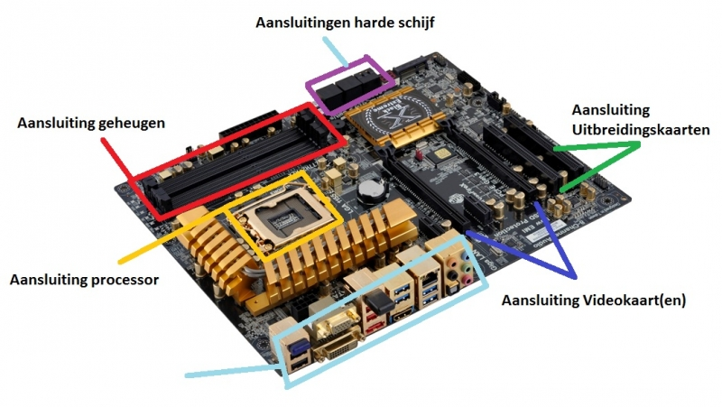

Er zijn enkele belangerijke functies en componenten bij een moederbord
CPU-socket
Het moederbord bevat een CPU-socket waarin de centrale verwerkingseenheid (CPU) wordt geplaatst.
De CPU is het "brein" van de computer en voert de meeste berekeningen uit.
RAM-slots
Moederborden hebben slots waarin het RAM-geheugen (Random Access Memory) wordt geïnstalleerd.
RAM zorgt voor tijdelijke opslag van gegevens die de CPU nodig heeft om snel te kunnen werken.
Expansiesleuven
Deze sleuven stellen gebruikers in staat om uitbreidingskaarten zoals grafische kaarten,
geluidskaarten en netwerkkaarten aan te sluiten. Deze kaarten voegen extra functionaliteit toe aan de computer
Aansluitingen en poorten
Het moederbord bevat verschillende aansluitingen en poorten, zoals USB-poorten,
HDMI- en VGA-poorten, audio-aansluitingen en meer. Deze maken verbinding met externe apparaten mogelijk.
Opslagaansluitingen
: Moederborden hebben ook aansluitingen voor het aansluiten van harde schijven
en solid-state drives (SSD's),
waardoor gegevensopslag mogelijk is.
Voedingsaansluitingen
Het moederbord ontvangt stroom van de voedingseenheid (PSU) van de computer via
specifieke aansluitingen.
BIOS/UEFI-chip
Dit is een speciale chip op het moederbord die het basisinvoer/uitvoersysteem (BIOS)
of het modernere Unified Extensible Firmware Interface (UEFI) bevat.
Het regelt de opstartvolgorde en configuratie van hardware.
